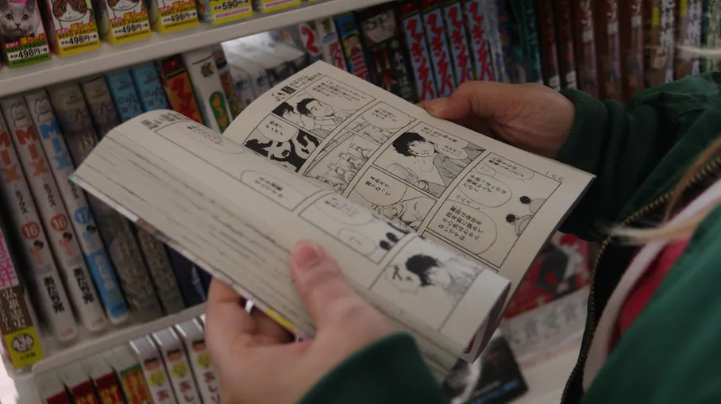

HISTÓRIA DO MANGÁ
Oque é um mangá?
"Mangá é o nome dado às histórias em quadrinho japonesas. Ele possui características marcantes que o difere das demais revistas em quadrinhos, como a forma de leitura, publicação, diagramação e traços nos desenhos dos personagens.
Muitos mangás originaram séries de desenhos para a televisão, os chamados animes. Alguns deles são Piece, Dragon Ball e Naruto, famosos também no Brasil.
Resumo sobre mangá=
Mangá é o nome dado a histórias em quadrinhos japonesas.
Os mangás possuem características marcantes nos seus desenhos, como olhos acentuados e expressivos.
Existem vários tipos e gêneros de mangás.
Há uma forma específica para ler mangá, que deve obedecer o sentido da direita para a esquerda.
Origem do mangá=
A origem do mangá remonta ao período feudal no Japão, mais precisamente a época do Oricom Shohatsu (Teatro das Sombras), no século XVII. Os artistas percorriam vilarejos contando lendas por meio das sombras de marionetes projetadas em uma espécie de painel.
Essas lendas acabaram sendo escritas e ilustradas em rolos de papel, dando origem às histórias em sequência, consequentemente originando o mangá.História do mangá=
No século XIX, o pintor Katsushika Hokusai publicou o primeiro encadernado com histórias desenhadas de forma sequencial. A série foi batizada de Hokusai Mangá e teve 15 volumes.
Foi a partir da criação de Hokusai que os quadrinhos japoneses passaram a se chamar mangá. A palavra é uma junção de dois vocábulos: man, que significa involuntário, e gá, que significa desenho ou imagem.
As histórias passaram a ser publicadas por algumas editoras na década de 20, mas a fama do mangá como o conhecemos atualmente só ocorreu por volta da década de 40.
No período da Segunda Guerra Mundial, os quadrinhos tiveram suas publicações interrompidas. Com o final da guerra, em 1945, eles retornaram, sendo inclusive uma forma de lazer e fuga da realidade para os japoneses, que saíram derrotados do conflito.
Com a popularização do mangá depois do fim da Segunda Guerra, alguns artistas ganharam destaque. O principal mangaká, nome dado aos desenhistas de mangás, foi Osamu Tezuka, que também era diretor e roteirista. Falecido em 1989, ele é conhecido como o “deus mangá” e até como o Walt Disney japonês.
No Brasil, a primeira publicação de mangá aconteceu em 1988, por meio da editora Cedibra. As artes foram colocadas ao contrário para que a leitura fosse feita de maneira tradicional.
A partir dos anos 2000, a editora Conrad publicou Dragon Ball, dando início à publicação dos mangás nos formatos originais.
Características do mangá=
Dentre as principais características dos mangás estão os traços dos desenhos com expressões faciais exageradas, como olhos grandes e expressivos, elementos metalinguísticos, como linhas de velocidade, entre outras. O mangá se diferencia das histórias em quadrinhos tradicionais, além da origem japonesa, pela forma de lê-lo — da direita para a esquerda — e pelos traços em preto e branco. É comum que esses quadrinhos publicados no Brasil venham com uma alerta na última página, para aqueles que não conhecem a forma correta de leitura.
Desenhos de mangá=
Personagens de mangá costumam ter olhos grandes e expressivos. A publicação dos mangás também é diferente das demais histórias em quadrinhos, já que são lançados em revistas periódicas, por capítulos. As histórias geralmente são mais longas e aprofundadas do que a de quadrinhos chamados ocidentais, chegando a ter até 200 páginas. A forma de publicação também faz com que eles sejam impressos em preto e branco e papel-jornal, na maioria das vezes Com o passar do tempo, os mangás saíram do papel e foram parar na televisão, transformando-se em animes, os desenhos animados japoneses. Isso foi muito importante para a disseminação do mangá no mundo todo
.Tipos de mangás=
- Kodomo: voltados para o público infantil, com mensagens importantes e lições de moral.
- Shounen: mais populares no Ocidente, pois possuem histórias de ação, aventura e esportes. Muitas dessas histórias acabam se tornando animes.
- Shoujo:costumam ter traços mais leves, artes menos carregadas e histórias com mais romance, mas, ainda assim, podem conter também ação e aventura.
- Yaoi / Yuri: são variantes dos mangás shoujo, mas voltados para histórias com relações homoafetivas.
- Seinen: destinados a um público adulto e maduro, já que tem seus temas desenvolvidos em histórias mais profundas.
- Josei: também são obras adultas, mas focadas em tramas de cotidiano e romance.
- Hentai / Seijin: no Ocidente, os mangás e animes com teor erótico são conhecidos como hentai, mas no Japão recebem o nome seijin. Podem ter histórias de todo tipo, do terror à comédia.
Existem também vários gêneros de mangá, os quais abordam diferentes questões e temáticas. Dentre os gêneros mais comuns estão os de ação, mistério, aventura, romance, comédia, ficção científica, fantasia e história.